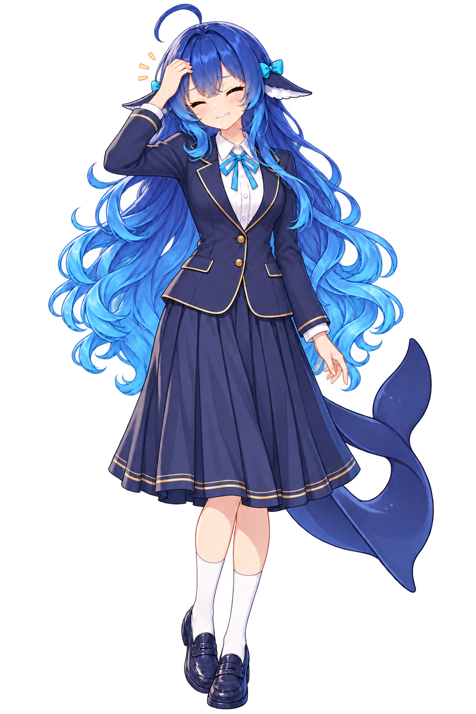
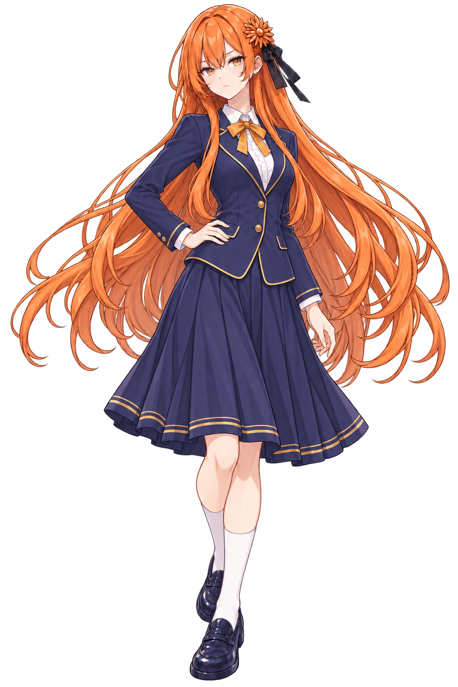
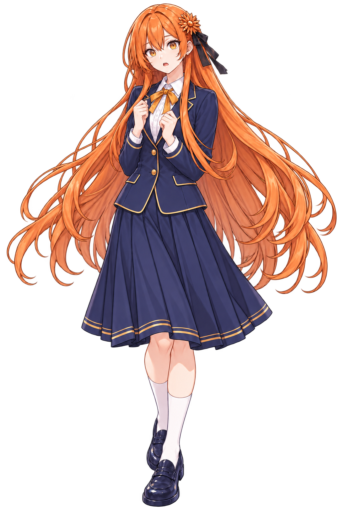
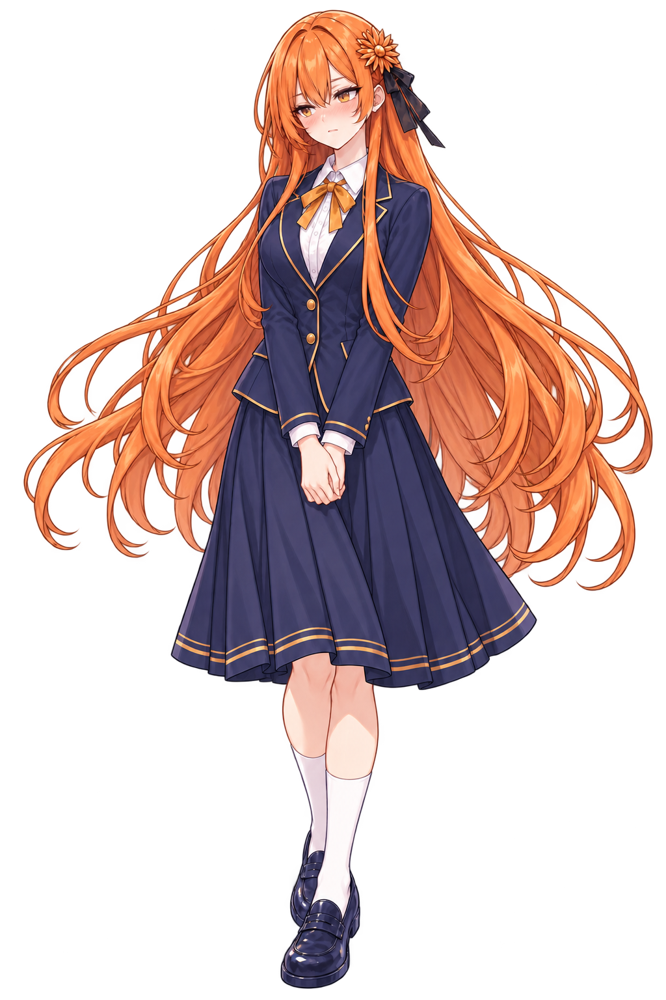
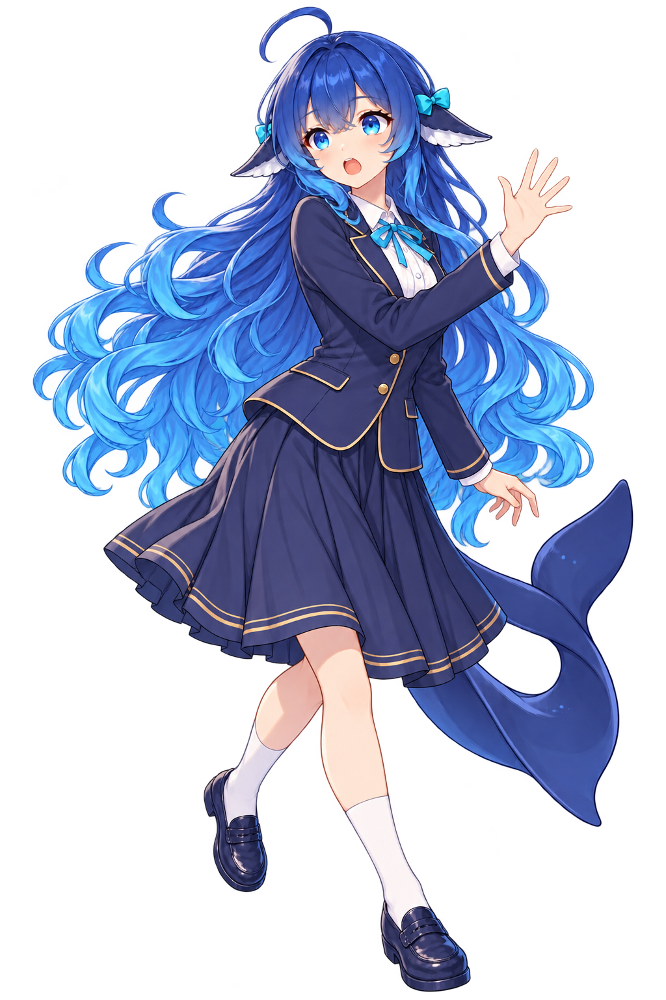
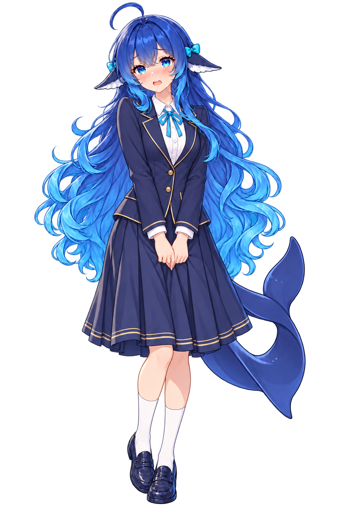
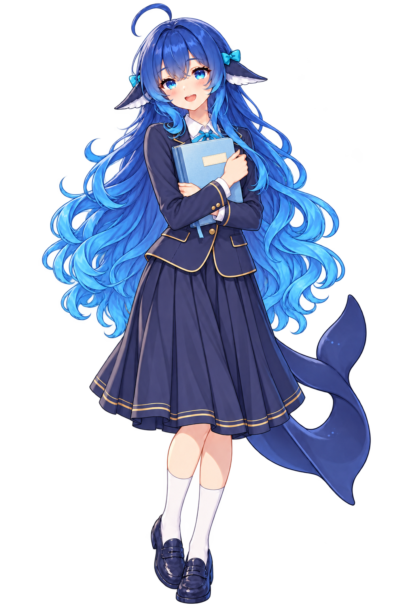
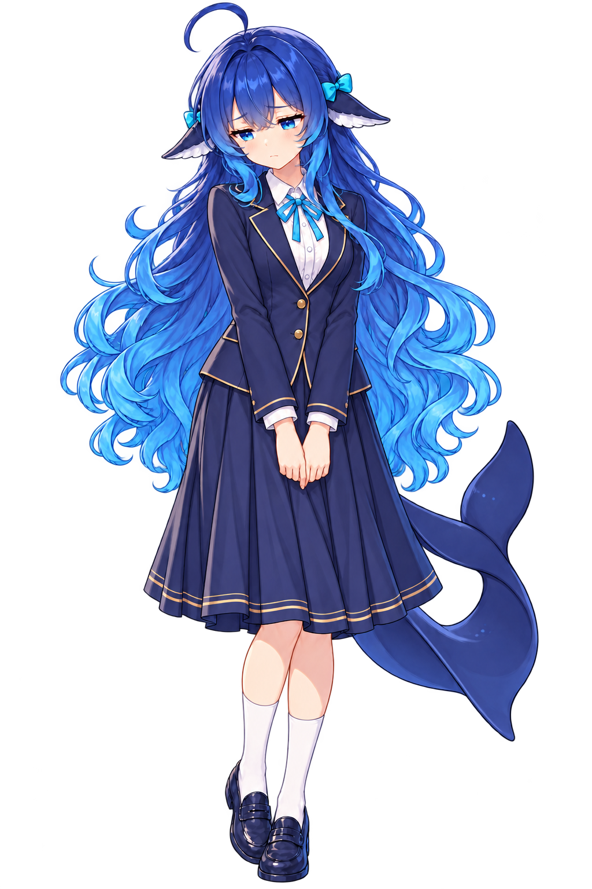
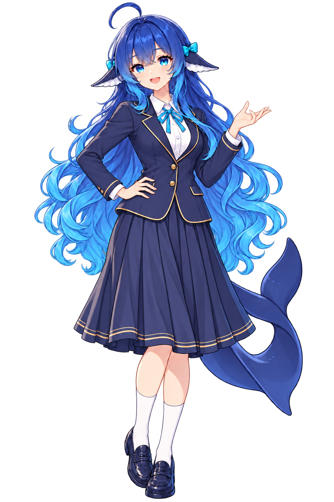

天台 · 春日午后1672 × 941 · PNG实际提示词
《未抵达的心意》 · 美术试制 v0.1
序章 ＋ 第一章 · 26 项资产 · 30 个演出镜头
这是分镜与资产连续性预览，镜头标题用于辨认演出节拍。立绘、道具在网页中作为独立图层展示，原始 PNG 未合并或改写；图书馆站姿层仅供表情预览，坐姿与接触动作见完整 CG。方向键切镜，空格播放 / 暂停。
















